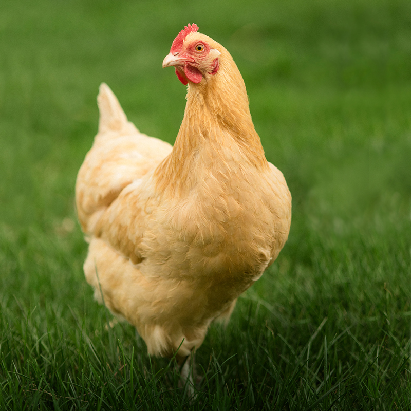

Buff Orpington: The Golden Beauty
About
About:
The Orpington is a breed of chicken named after the town of Orpington, Kent, in southeast England. It was bred for superior egg laying and while retaining meat quality making them a dual-purpose bird. They are big, friendly balls of fluff and feathers, and are quite cold-hardy. The
Buff Orpington is by the far the most popular variety, but is does come in others. They are wonderful mothers, they do go broody. There is nothing more charming than seeing a mother Orpington and her fluffy new baby chicks peeking from beneath her wings in a field on a sunny day.
Egg Facts:
| Egg Laying: |
| Good (3/wk) |
| Egg Color: |
| Brown |
| Egg Size: |
| Large |
Origins:
| Class: |
| English |
| Type: |
| Large Fowl & Bantam |
| Size: |
| Heavy (7-8 lbs) |
| Rarity: |
| Common |
| Purpose: |
| Dual |
| Varieties: |
| Buff, Black, White, Splash, and Lavender |
Suitability for Backyard Life:
| Cold Hardy: |
| Yes |
| Heat Tolerant: |
| No |
| Confinement: |
| Yes |
| Docile: |
| Yes |
Broody : : |
| Yes |
|
| |
Fancy Features:
| Comb Type: |
| Single Comb |
| Crested: |
| No |
| Feathered Legs: |
| No |
| Number of Toes: |
| 4 |
History & Other Info
- The original Black Orpington was bred by William Cook in 1886 by corssing Minorcas, Langshans, and Plymouth Rocks.
- In the beginning of the 20th century, Herman Kuhn of Germany developed a Bantam variety.
- In the UK, the dedicated breed club is the Orpington Club, which merged with the Orpington Bantam Club in 1975. The United Orpington Club is the American breeder's club, and the Orpington CLub of Australia is the Australian club for th breed.
- Orpingtons used to lay as many as 340 eggs per year, however this number has declined to about 175-200 eggs due to breeders selecting for looks over utility.
If you have the time, read more about these beautiful birds on their
Wikiapedia Page.